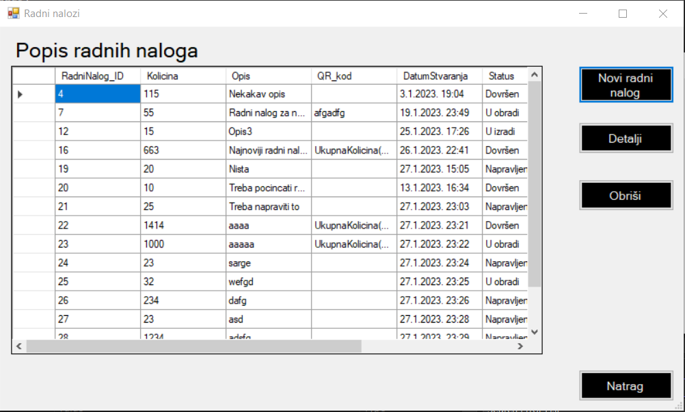

Ovo je forma radnih naloga. Odmah pri otvaranju možete vidjeti u tablici popis svih radnih naloga koji se nalaze u bazi. S desne strane imate četiri gumba. Ako kliknete na gumb "Novi radni nalog", otvorit će Vam se novi prozor u kojem možete stvoriti novi radni nalog. Gumb "Detalji" otvara novi prozor na kojem se nalaze informacije o radnom nalogu, no kako bi mogli vidjeti sve informacije nekog radnog naloga morate ga prvo odabrati unutar tablice, klikom na neku ćeliju tog radnog naloga ili cijeli red. Kako biste obrisali radni nalog, morate ga također odabrati unutar tablice na isti način te klikom na gumb "Obriši". Klikom na gumb "Natrag" vratit će te se na prijašnji prozor "Početne stranice".
